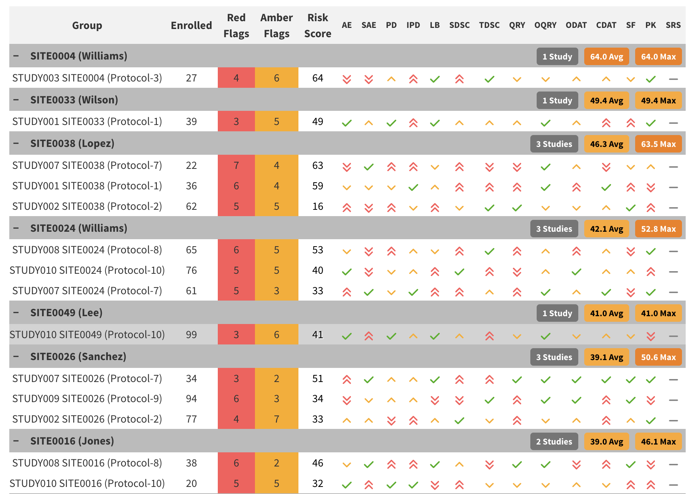

Overview
This vignette describes how site-level risk scores are calculated using Key Risk Indicators (KRIs), their associated flags, and predefined weights for those flags. The risk scoring framework provides a standardized, quantitative way to highlight sites with elevated risk.
Risk Indicators, Flags and Weights
Each KRI (e.g., Adverse Events, Serious Adverse Events, Protocol
Deviations) in the gsm framework is assigned a
flag as part of the standard
analysis workflow. Flags can also be associated with a
weight, which reflects their contribution to site risk. For
example, a site with a low adverse event rate could present more risk
than a site with a low query rate. While both KRIs could have the same
flag value (e.g. -2, representing low rates compared to
other sites) a higher weight could be assigned to the AE KRI
flag than the query rate KRI flag. Default flag weights for the 12
standard gsm are shown below.
| KRI | Low_Red | Low_Amber | High_Amber | High_Red |
|---|---|---|---|---|
| Adverse Event | 32 | 16 | 1 | 2 |
| Serious Adverse Event | 8 | 0 | 4 | 8 |
| Protocol Deviations | 8 | 4 | 8 | 16 |
| Important Protocol Deviations | 0 | 0 | 16 | 32 |
| Labs | 0 | 0 | 1 | 2 |
| Query Rate | 0 | 0 | 1 | 2 |
| Delayed Query Rate | 0 | 0 | 1 | 2 |
| Delayed Data Entry Rate | 0 | 0 | 1 | 2 |
| Data Change Rate | 0 | 0 | 1 | 2 |
| Screen Failure | 0 | 0 | 8 | 16 |
| Treatment Discontinuation | 0 | 0 | 16 | 32 |
| Study Discontinuation | 0 | 0 | 16 | 32 |
The gsm.core::flag() function is used to calculate
site-level flag values and associated weights. Three key parameters are
used in the site-risk score process:
-
vThresholdVector of numeric values representing threshold values. Default isc(-3,-2,2,3)which is typical for z-scores. -
vFlagVector of flag values. There must be one more item in Flag than thresholds - that islength(vThreshold)+1 == length(vFlagValues). Default isc(-2,-1,0,1,2), which is typical for z-scores. -
vRiskScoreWeightVector of weights to apply to each flag value. Default:NULL.
When vRiskScoreWeight is provided, the
Flag() output will include additional columns capturing
Weight and MaxWeight with the corresponding
weight for each KRI.
These parameters allow for flexible configuration of the relative
risk for different metrics in a study. While single metrics can be run
via direct calls to Flag(), YAML
workflows are recommended for reusable implementations. As such, all
standard KRIs include default thresholds, flags and weights. For
reference, the relevant sections of the Adverse
Event KRI YAML, including the default flag and weight values and
Flag() function call are shown below for reference:
meta:
Type: Analysis
ID: kri0001
GroupLevel: Site
Abbreviation: AE
Metric: Adverse Event Rate
Numerator: Adverse Events
Denominator: Days on Study
Model: Normal Approximation
Score: Adjusted Z-Score
AnalysisType: rate
Threshold: -2,-1,2,3
Flag: "-2,-1,0,1,2"
RiskScoreWeight: "32,16,0,1,2"
...
steps:
- output: vThreshold
name: gsm.core::ParseThreshold
params:
strThreshold: Threshold
- output: vRiskScoreWeight
name: gsm.core::ParseThreshold
params:
strThreshold: RiskScoreWeight
bSort: false
- output: vFlag
name: gsm.core::ParseThreshold
params:
strThreshold: Flag
bSort: false
...
- output: Analysis_Flagged
name: gsm.core::Flag
params:
dfAnalyzed: Analysis_Analyzed
vThreshold: vThreshold
vFlag: vFlag
vRiskScoreWeight: vRiskScoreWeight
nAccrualThreshold: AccrualThreshold
strAccrualMetric: AccrualMetric
...First, Threshold, Flag, and
RiskScoreWeight values provided in the metadata are parsed
from strings to vectors using gsm.core::ParseThreshold().
These parsed vectors are then passed to the
gsm.core::Flag() function to compute flags and weights for
each site.
Site Risk Score Calculation
Once all flags and weights for all metrics are calculated, a site risk score is calculated by taking the sum of the weights associated for each KRI. Below is a worked example for one site:
| KRI | Flag | Contribution |
|---|---|---|
| Adverse Event | -2 | 32 |
| Serious Adverse Event | 0 | 0 |
| Protocol Deviations | -1 | 4 |
| Important Protocol Deviations | 0 | 0 |
| Labs | 0 | 0 |
| Query Rate | 1 | 1 |
| Delayed Query Rate | 0 | 0 |
| Delayed Data Entry Rate | 0 | 0 |
| Data Change Rate | 0 | 0 |
| Screen Failure | 1 | 8 |
| Treatment Discontinuation | 0 | 0 |
| Study Discontinuation | 0 | 0 |
These weights are added up at the site level and divided by the maximum possible score to create a normalized risk score between 0 and 100. This normalized site risk score is what is reported in the KRI report, and if desired, any sites above a certain threshold can be flagged for further review.
normalized_score <- (sum(site_example$Contribution)/178) * 100
normalized_score
#> [1] 25.2809Using CalculateRiskScore()
The gsm.kri::CalculateRiskScore() function simplifies
the risk score calculation process. The function takes KRI results with
flag information and a weights table to compute normalized risk scores
automatically.
Basic Usage
library(gsm.core)
library(gsm.kri)
library(dplyr)
# Step 1: Prepare KRI results (filter to single study/snapshot)
dfResults <- gsm.core::reportingResults %>%
filter(!grepl("srs0001", MetricID)) %>%
FilterByLatestSnapshotDate()
# Step 2: Create weights table from metric metadata
dfWeights <- MakeWeights(gsm.core::reportingMetrics)
# Step 3: Calculate risk scores
dfRiskScore <- CalculateRiskScore(
dfResults = dfResults,
dfWeights = dfWeights,
strMetricID = "Analysis_srs0001"
)The MakeWeights() function parses the Flag
and RiskScoreWeight columns from the metrics metadata
(e.g., gsm.core::reportingMetrics) to create a weight
lookup table. This table contains one row per MetricID-Flag combination
with corresponding weights and maximum weights.
Default Workflow
The Site Risk Score is calculated automatically as part of the
standard KRI workflow using the srs0001.yaml workflow file
located in inst/workflow/2_metrics/. This workflow:
- Filters the list of analyzed KRIs to only include those with the “kri” pattern
- Stacks the flagged results from all KRIs into a single data frame
- Calls
CalculateRiskScore()to compute site risk scores - Returns the results as a new metric (
srs0001) using thegsm.kri::CalculateRiskScore()function - The standard KRI report produced by
Report_KRI()includes a column showing the normalized site risk score for each site for a single study.
Review Priority Score
The srs0002 workflow now answers a different question
from the original Site Risk Score: which KRI contributions still require
monitoring review? The original srs0001, KRI flags, and
full maximum-risk denominator are unchanged. A recent response is
evidence of monitoring activity, not evidence that the underlying risk
has disappeared.
Last addressed date
MakeActionSummary() returns one row per current
study/site/KRI, including green, zero-weight, and unweighted results. It
selects a complete frozen extraction first, then considers all eligible
signal snapshots for that KRI. A new signal at a later snapshot does not
discard an earlier dated decision. Multiple actions never multiply the
current KRI contribution.
The window defaults to 90 days and is inclusive: day 90 is Recent and
day 91 is Expired. The last known date remains available after expiry.
Age is measured against dActionAsOfDate, which defaults to
the results snapshot rather than the computer’s current date. A later
assessment date can be supplied for a subsequent monitoring review. The
extraction cutoff defaults to that assessment date; an explicit
dActionExtractionDate can select a later archived freeze.
Signal snapshots after the results snapshot and decision events after
the assessment date are not used. Never fill gaps from another
extraction.
Authoritative decision evidence
An existing ActionLog state or work-item creation date cannot establish when a human addressed a finding. Supply these additive fields from a source-system decision record or audit trail, enriching the projected ActionLog before scoring:
| Field | Meaning |
|---|---|
ActionedDate |
Date of the documented monitoring decision or substantive action |
ActionedDateSource |
Nonempty provenance describing the source decision evidence |
ActionedFlag |
Numeric KRI flag reviewed at that decision |
ActionScope |
SiteMetric for the ongoing site/KRI finding, or
Signal for its signal snapshot only |
RiskEpisodeID |
Optional identity separating independent findings within one KRI |
ActionReopened |
Optional logical indication that a finding was reopened |
ActionCriticality |
Logical critical-action designation when available |
ActionEventID |
Optional event identity distinguishing repeated decisions for one action |
These are not fields produced by the existing upstream 33-column
projection. Existing logs remain accepted, but their missing dates are
Unknown and cannot justify exclusion. In particular, ADO’s
ActionCreatedDate is the creation date of the shared
signal/action work item, not necessarily its human triage date. Signal
creation, resolution, extraction, and general edit dates are not
silently substituted for ActionedDate.
A documented Open Action, Closed Action, or No Action decision may
qualify. Awaiting Triage never does. Including a dated No Action
decision is why the table uses Last addressed, rather
than implying completed mitigation. Set
bActionHistoryComplete = TRUE only when the selected
extraction contains the complete relevant decision history. Without that
assertion, known dates can be displayed but cannot suppress
contributions. Never requires complete history; undated decision
evidence remains Unknown.
Coverage and priority
A recent date and a decision’s applicability are separate facts. SiteMetric scope explicitly certifies applicability to the ongoing finding across repeated snapshots; it must not be assigned merely because site and metric IDs match. Signal scope applies only at its originating snapshot. Increased severity, changed direction, different or unknown episodes, reopened or critical actions, undated decisions, conflicting latest-day coverage, and unknown reviewed severity retain the full contribution. Equal-date ties use deterministic ID ordering only for a representative audit row, not to resolve conflicting evidence.
With intActionWindowDays supplied, the action factor is
zero only for a recent, covered decision and one otherwise. Only the
numerator is adjusted; the denominator remains the original full SRS
denominator. A window of zero includes decisions on the assessment date
only.
action_score_detail <- MakeActionRiskScoreDetail(
dfResults = current_kri_results,
dfWeights = MakeWeights(reporting_metrics),
dfActionLog = decision_enriched_action_log,
intActionWindowDays = 90,
bActionHistoryComplete = TRUE
)
priority_score <- CalculateActionRiskScore(
dfResults = current_kri_results,
dfWeights = MakeWeights(reporting_metrics),
dfActionLog = decision_enriched_action_log,
intActionWindowDays = 90,
bActionHistoryComplete = TRUE
)The workflow reads persisted Analysis_Summary and
Reporting_ActionLog, keeping credentials outside this
package. Configure meta.ActionWindowDays,
meta.ActionAsOfDate,
meta.ActionExtractionDate, and
meta.ActionHistoryComplete. Defaults are 90, NULL, NULL,
and FALSE. It returns both Analysis_srs0002 and
Analysis_ActionRiskScoreDetail; the site report module
consumes detail when available. Persist these configuration values and
the selected extraction to reproduce a run.
Action indicators
With dated detail, Report_KRI() labels the second
measure Review Priority Score unless an explicit label
is supplied. Each specific site/KRI cell with a documented action 0
through 90 days before the assessment date receives a blue inset border.
Other cells for the same site or metric are unaffected. The tooltip
shows the recorded date and age. Missing and future dates, and actions
older than 90 days, receive no border. Zero-weight and green KRIs can
still have recent actions and are marked in the same way.
This is a recency indicator, independent of whether the decision covers the current finding. It does not imply risk resolution or alter either reported score. All KRI cells remain visible and retain their original flag colors. There are no window, hide, or score-exclusion controls.
Clicking a priority score opens its site’s detail with last addressed date, age, decision state, review reason, contribution, and source IDs. Assessment date, extraction, and provenance are available on the detail row.
Download review data exports JSON for visible sites,
including original risk scores, reported priority scores, and evidence
for every KRI. The export keeps the fixed 90-day highlight window
separate from the backend scoring window, which remains configurable for
scripted runs. The widget never recalculates scores or writes back to
the source system. Direct widget callers can supply the same detail
through dfComparisonRiskDetail and should set
strComparisonRiskLabel = "Review Priority Score".
Legacy state weighting
Direct calls with intActionWindowDays = NULL preserve
the legacy Adjusted Risk Score. It starts from the same
KRI flag weights as srs0001 and multiplies each KRI’s
contribution by a factor taken from its Central Monitoring ActionLog
state. The denominator is unchanged, so a finding triaged as needing no
action stops counting toward the site’s score without shrinking the
scale the score is measured on.
Formula
For site at snapshot , summing over the site’s KRI results :
-
is the weight for flag
of KRI
from
MakeWeights(), the same weightsrs0001uses, and is that KRI’s largest weight. - is the action factor for the KRI’s ActionLog state:
| ActionLog state | Default factor |
|---|---|
| Open Action | 1 |
| Closed Action | 1 |
| Awaiting Triage | 1 |
| No Action | 0 |
Every factor is between 0 and 1, so the Adjusted Risk Score is never
higher than the Site Risk Score; with all factors equal to 1 it matches
srs0001 exactly. For example, with three KRIs weighted
4, 4, and 8 in states
No Action, Open Action, and
Closed Action, the numerator is 0 + 4 + 8 = 12
over the original denominator of 16, a score of
75.
Including Awaiting Triage is a conservative default so
that unreviewed findings do not understate site risk. Factors can be
changed with lActionFactors in legacy function calls, not
the date-window workflow.
action_weighted_score <- CalculateActionRiskScore(
dfResults = current_kri_results,
dfWeights = MakeWeights(reporting_metrics),
dfActionLog = reporting_action_log,
strMissingState = "error"
)Which ActionLog entry is used
Grail’s ActionLog is a frozen source-system read. Its
SnapshotDate identifies the originating signal, not when
its current state became known. Several signal snapshots in one
extraction are not a state-change history.
- Select the latest complete
ExtractionDateon or before the results snapshot.dActionExtractionDatecan explicitly select the later freeze associated with a scoring run. Persist that extraction to replay the run; do not reconstruct earlier decisions from a later source-system read. - Within that extraction, select the latest signal snapshot for each
StudyID + GroupLevel + GroupID + MetricID.dActionSnapshotDatecan impose an earlier signal-snapshot cutoff, but does not time-travel states. - Keep every signal and action at that snapshot and use their largest
configured factor. For example,
No ActionplusOpen Actioncounts in full with the default factors. Each KRI still contributes only once.
Do not fill gaps in the selected extraction with records from older
reads. RiskSignalID and ActionID are character
identifiers; multiple action rows are valid, while repeated row
identities within an extraction are rejected. For a legacy input without
identifiers, the five-column result key must remain unique within each
extraction.
Use the compatible State field: grail derives it from
ActionState when an action exists, otherwise from
RiskSignalState. Using ActionState alone would
discard unactioned triage decisions. Action lifecycle dates cannot
reconstruct arbitrary historical state transitions.
Missing action states
A KRI with a nonzero weight and no matching ActionLog entry is an
error by default (strMissingState = "error"). Choose
"include" to count its full weight until it is triaged, or
"exclude" to drop it. Zero-weight KRIs never need an
ActionLog entry. Including missing states is conservative because new or
deliberately suppressed signals may have no source-system record. These
fallbacks apply only to legacy calls; date-window mode always includes
unknown evidence regardless of strMissingState.
Legacy reporting
When both scores are present, the site-level
Report_KRI() overview shows Analysis_srs0002
in an Adjusted Risk Score column immediately after the
existing Risk Score (Analysis_srs0001)
column.
MakeActionRiskScoreDetail() returns the per-KRI rows
behind the score: each KRI’s weight, the ActionLog state and date
applied, and the resulting effective weight. It also retains
ActionExtractionDate, sorted signal and action identifiers,
and ActionCount for audit.
CalculateActionRiskScore() summarizes these same rows, so
the two always agree. Passing them to
Report_KRI(dfRiskScoreDetail = ...) makes each Adjusted
Risk Score clickable: a row opens under the site listing each weighted
KRI’s flag, action state, signal snapshot, and whether it counts toward
the score (Yes, Partly, or No), with excluded KRIs shown in grey. The
Adjusted Risk Score is its own measure, so the report does not present
it as a difference from the Risk Score.
action_score_detail <- MakeActionRiskScoreDetail(
dfResults = current_kri_results,
dfWeights = MakeWeights(reporting_metrics),
dfActionLog = reporting_action_log
)
Report_KRI(
lCharts = charts,
dfResults = site_results,
dfMetrics = reporting_metrics,
dfGroups = reporting_groups,
dfRiskScoreDetail = action_score_detail
)Reports without Analysis_srs0002 keep the original
layout, and any detail passed to them is ignored.
gsm.vizr::Widget_GroupOverview() callers can request the
same layout with
strComparisonRiskMetric = "Analysis_srs0002" and
dfComparisonRiskDetail; leaving
strComparisonRiskMetric NULL preserves the
single-score widget. Cross-study functions accept
strRiskScoreMetric = "Analysis_srs0002" to display the
adjusted score.
Cross-Study Site Risk Scores
The Widget_CrossStudyRiskScore() function enables
visualization of site risk scores across multiple studies
simultaneously. This widget provides an interactive table that allows
users to:
- View aggregated risk score statistics across studies
- Compare site performance within and across studies
- Drill down into individual site details by clicking on summary rows
Cross-Study Implementation
The cross-study widget requires results data that includes the
Analysis_srs0001 metric along with individual KRI results.
The workflow typically involves:
- Data preparation: Combine results from multiple studies, ensuring each has calculated site risk scores
-
Summary generation: Use
SummarizeCrossStudy()to aggregate metrics across studies - Widget creation: Pass results, metrics, and groups metadata to create the interactive visualization
# Example: Create cross-study risk score widget
cross_study_widget <- Widget_CrossStudyRiskScore(
dfResults = multi_study_results, # Must include Analysis_srs0001
dfMetrics = gsm.core::reportingMetrics,
dfGroups = multi_study_groups,
strGroupLevel = "Site"
)The widget produces an interactive table showing risk score summaries across studies:

Cross-Study Risk Score Widget showing site risk summaries across multiple studies
For a complete working example, see https://github.com/Gilead-Public/gsm.kri/blob/main/pkgdown/menus/examples/Example_CrossStudySRS.Rmd, which demonstrates:
- Simulating multi-study data with site risk scores
- Creating the cross-study widget
- Rendering the interactive visualization in an HTML report
This functionality is particularly useful for portfolio-level monitoring where sponsors need to assess relative risk across multiple clinical trials simultaneously.